Chapter 7 사례
7.1 개요
본 사례에서는 류마티스 관절염 (Rheumatoid Arthritis; RA)환자에서 전통적인 RA 치료제 (Disease Modifying Anti-Rheumatic Drug; DMARD)와 생물학적인 DMARD인 종양괴사인자-알파 억제제 (Tumor necrosis factor-alpha inhibitor; TNFi)에 사용에 따 른 고관절 골절의 발생율을 비교하는 후향적 코호트 자료 구축과 분석의 과정을 소 개한다. 본 사례는 kim et al (2012)13)을 참고로 하여 청구자료를 이용한 후향적 코호 트연구의 수행에 관한 이해를 돕기 위한 사례로 작성되었다. 본 사례에서 사용된 연 구설계와 변수 정의가 참고논문과 차이가 있는 부분들이 있으나 우리 자료의 특성을 반영하기 위한 것이었으며, 이에 임상적 해석을 위한 자료의 보완없이 본 자료만으 로 치료제와 부작용간의 인과적 연관성으로 참고논문과 같은 의미를 부여하는 것은 가능하지 않음을 미리 밝힌다.
7.2 자료원
건강보험심사평가원의 건강보험 청구자료에서 진료일 기준으로 2007년 1월 1일부 터 2015년 12월 31일까지 건강보험 및 의료급여로 상급종합병원, 종합병원, 병원, 요 양병원, 의원, 정신요양병원, 보건소, 보건지소, 그리고 보건의료원을 방문한 RA 환자 의 전체 의료이용자료를 이용하였다. RA 환자는 상병코드로 혈청양성 류마티스 관절 염 (Seropositive rheumatoid arthritis, ICD-10 code: M05), 그 밖의 류마티스 관절염 (Other rheumatoid arthritis, ICD-10 code: M06)을 가지는 경우로 정의하였다. 이때 서 면청구 또는 포괄수가제로 청구되거나 추가로 청구된 명세서는 제외하였으며, 연구 에 활용한 건강보험 청구자료 내역은 다음 표와 같다.
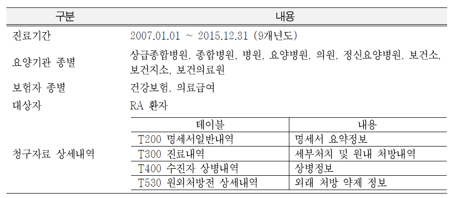
7.3 연구설계
연구대상자 선정
RA 환자에서 생물학적인 류마티스 치료제 (Biologic DMARD; bDMARD)와 전통적인 치료제 (traditional DMARD; tDMARD) 사용에 따른 고관절 골절의 발생을 비교하기 위해 건강보험심사평가원의 건강보험 청구자료를 활용하여 후향적 코호트 연구 (retrospective cohort study)를 시행하였다.
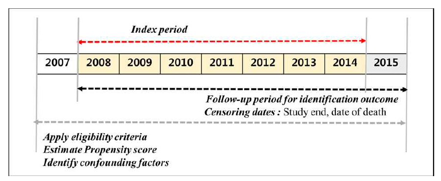
2007년 1월 1일 부터 2015년 12월 31일 사이에 RA 주상병 수진자로서 DMARD 처 방을 받은 환자 중, 2008년 1월 1일부터 2014년 12월 31일 사이에 DMARD를 처음 처방받은 환자를 연구대상자로 선정하였다. 이 선정 작업을 위하여 RA 진단하에 추 출된 전체 자료에서 DMARD 처방이 처음으로 나온 명세서의 요양개시일자를 코호트 입적일로 정의하였다. 선정기준과 제외기준은 다음 표와 같다. 2014년 12월 31일까지로 입적기간을 한정한 것은 적어도 1년 이상의 관찰기간을 확보하여 투약에 따른 골 절 결과를 확인하기 위한 장치이다.
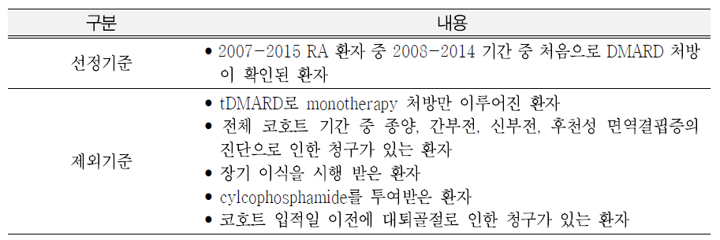
코호트 입적일을 기준으로 이전 1년까지 자료를 이용해 대상자의 질환 과거력 등 을 파악하고, 추적관찰기간을 코호트 입적일 이후 2015년 12월 31일 이내 추적종료 시점까지로 정의하였다. 추적종료시점은 고관절 골절로 인한 입원이 발생한 경우는 결과변수가 처음 발생한 시점으로 정의하고, 관심 결과가 발생하지 않은 경우는 2015년 12월 31일까지로 정의하였다.
치료법 정의
DMARD 처방은 T300 진료내역, T530 원외처방전 상세내역에서 DMARD 코드의 유 무로 정의하였다. 연구에서 고려한 DMARD의 목록은 다음과 같다.

후향적 코호트 연구 분석에서 DMARD 노출에 따른 결과변수 발생의 인과적 연관 성을 보여주기 위한 용량반응관계, 기간반응관계를 제시하나 본 예시에서는 이러한 과정까지 제시하지는 않았다. 하지만, 위 약물 목록에서 제시하는 ATC 코드의 출처 인 세계보건기구 홈페이지를 참고하여 각 약물의 Defined Daily Dose (DDD)를 파악 할 수 있는데, 성인에서 해당 적응증에 대하여 1일 사용량으로 권장되는 용량인 DDD를 단위로 하여 누적사용량을 파악하고, 이 누적사용량에 따른 골절위험을 제시 하는 방식으로 용량반응관계를 제시하고, 청구자료에 명시된 처방일자와 처방의 길 이를 이용하여 골절 발생일시와의 인접여부를 판단하는 분석을 수행할 수 있다는 설 명으로 이 부분은 갈음하고자 한다.
결과 발생 정의
bDMARD 군과 tDMARD 군의 고관절 골절 발생을 비교하기 위해, 연구대상자의 입 적일 이후에 ICD 10 code로 S72.0 fracture of neck of the femur, 또는 S72.1 pertrochanteric fracture, 또는 S72.2 subtrochanteric fracture을 청구의 주진단으로 가지는 입원이 있는 경우 가지는 경우를 결과변수의 발생으로 정의하였다.
사망은 진료결과구분코드가 사망이거나, 상병코드가 급성 심장사로 기술된 것 (I461), 원인 미상의 기타 급사(R96), 순간적 사망(R960), 증상의 발생으로부터 24시간 이내에 일어난 달리 설명되지 않는 사망(R961), 지켜본 사람이 없었던 사망(R98), 기타 불명확하고 상세불명의 사망원인(R99)인 경우로 정의하였다.
공변량 정의
결과변수인 대퇴골절의 발생에 영향을 미치는 공변량으로 연령, 성별을 비롯하여 코호트 입적일 이전 1년 이내 발생한 골다공증 관련인자, 약물사용 관련인자, 그리고 의료이용 관련인자를 고려하였다. 세부적인 공변량 정의 기준은 다음표와 같다.

여기서 약제 관련 요인들에 대해서는 세계보건기구 의약품 분류기준을 활용하여 각 약물군에 속하는 성분명을 확인하였다. 성분명코드는 건강보험심사평가원 성분명 마스터파일을 통하여 확인하여, 국내에서 보험 적용이 되는 약에 한하여 분석에 포함할 수 있었다.
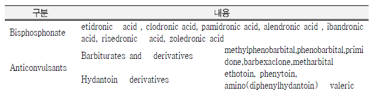 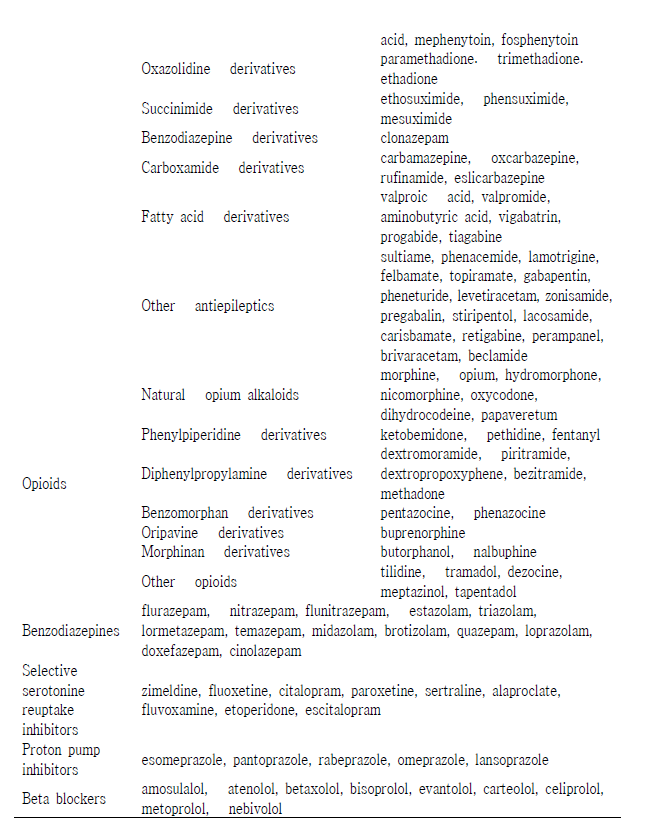
스테로이드의 누적 노출량의 경우 각 스테로이드별로 효능이 다르고, 이에 따른 부작용의 정도도 다름이 알려져 있다. 이에, 모든 스테로이드를 하이드로코티존 등가 용량 (hydrocortisone equivalent dose)으로 변환하고 누적 노출량을 구하였으며, 누적 노출량 산출을 위한 등가용량 전환표는 다음과 같다.
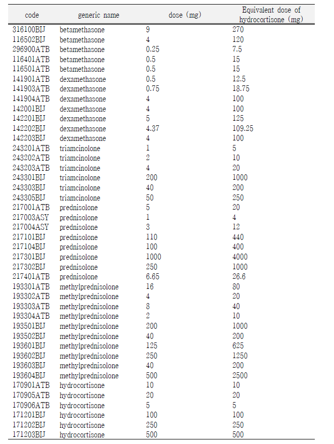
통계분석방법
연구대상자의 특성 중 범주형 변수는 빈도와 백분율로 제시하고, 연속형변수는 평
균과 표준편차로 나타내었다. bDMARD군과 tDMARD군의 기저 특성을 비교하기 위해 연속형 변수인 경우 독립 t-검정(independent t-test), 범주형 변수인 경우 카이제곱 검정(Chi-square test) 을 사용하여 p-value를 산출하였다.
기저 불균형을 보정하기 위한 방법으로서 성향점수(propensity score)를 이용한 방 법을 적용하였다. 이를 위해 대상자의 1년 이전 위험인자들을 이용하여 로지스틱 회 귀모형을 이용하여 성향점수를 추정하고, 성향점수에 따라 Greedy algorithm을 이용 하여 양군을 1:1로 개별매칭(individual matching)하였다.
매칭 전후의 공변량 균형을 검토하기 위해 표준화 차이(standardized difference, STD)를 사용하였고, 표준화 차이가 0.1보다 큰 경우 해당 공변량이 불균형이라고 판 단하였다. 이분형 변수인 경우 표준화 차이는
\[ d=\frac{\hat{p}_t - \hat{p}_c}{\sqrt{\frac{\hat{p}_t(1-\hat{p}_t) + \hat{p}_c(1-\hat{p}_c)}{2}}} \] 그리고 연속형 변수인 경우 표준화 차이는
\[ d=\frac{\bar{x}_t-\bar{x}_c}{\sqrt{\frac{S_t^2+S_c^2}{2}}} \]
로 표현된다.
bDMARD군과 tDMARD군에 따른 고관절골절의 발생 위험은 콕스비례위험모형(cox proportional hazard model)으로 분석하였으며, 비례가정은 log-minus-log 생존그림을 이용하여 평가하였다. 위험비(hazard ratio, HR)는 95% 신뢰구간(confidence interval, CI)과 유의확률(p-value)을 함께 제시하였다. 고관절 골절의 경우 사망에 의하여 관찰 이 불가능해 지는 결과변수이므로 경쟁위험(competing risk)을 고려한 통계분석 방법 의 적용이 필요하나, 본 사례에서는 고려하지 않았다. 모든 통계분석은 SASⓇ Enterprise Guide version 6.1 (SAS Institute, Cary, NC, USA)을 사용하여 수행하였고, 통계적 유의성은 유의수준 5%로 판단하였으며 모든 검정은 양측으로 진행되었다.
7.4 연구결과
연구대상자 선정
연구 대상자 선정의 과정은 다음 그림과 같다. 최초 M05, M06 주진단 코드로 추출 된 1,507,619 명의 RA환자에서 상기 선정제외기준을 적용한 결과 3,953명의 TNF inhibitor 사용자와 같은 수의 tDMARD 사용자를 짝지어 비교하게 되었다.
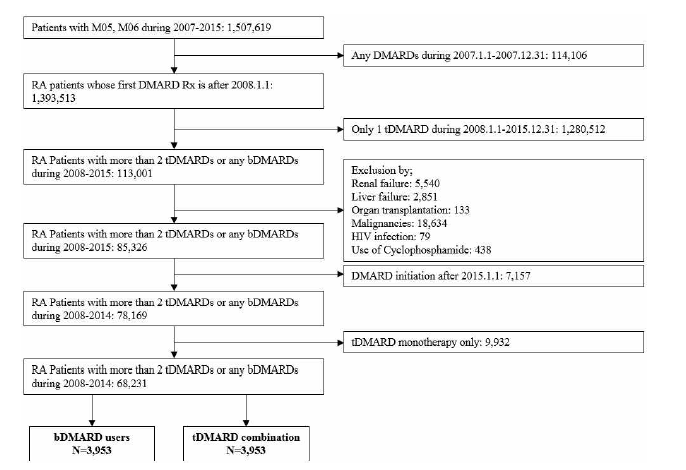
연구대상자 기저특성
RA환자 중 tDMARD군과 bDMARD군의 기저특성을 살펴본 결과, proton pump inhibitor, opioids의 사용, 그리고 전체 방문수와 처방약의 개수를 제외한 대부분의 변 수에서 통계적으로 유의한 차이가 있었다.
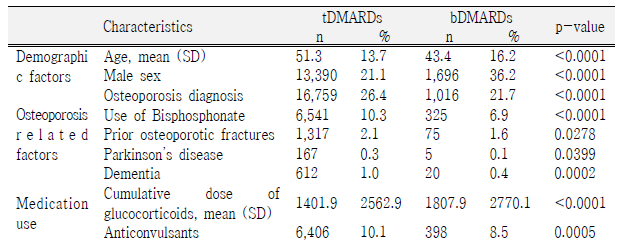 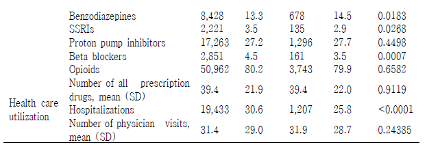
성향점수를 로지스틱 회귀모형을 이용하여 산출하여 그 분포를 보면, 아래 그림과 같이 두 군에서 불균형이 존재함을 알 수 있다.
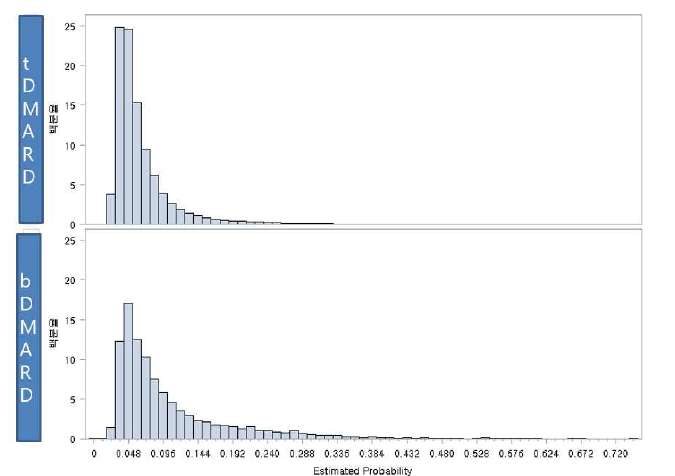
bDMARD 환자 1명에 같은 성향점수를 갖는 환자 1명을 짝을 짓는 방법으로 양군의 균형을 맞추었고, 그 결과 양군의 성향점수의 분포는 아래의 그림과 같이 일치하게 되었다.

성향점수 짝짓기를 수행한 후, 성별을 제외한 모든 변수의 standardized difference 는 0.1보다 작아서 두 군간 기저특성의 균형을 이루었다.
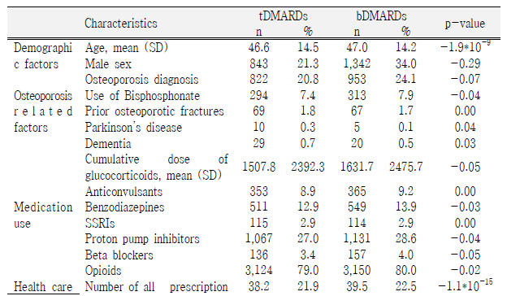 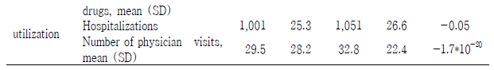
####임상적 효과 분석 {-} RA환자에서 tDMARD군과 bDMARD군에서 대퇴골절의 발생을 콕스비례위험모형으 로 분석하였다. 기저특성에서 균형을 이루지 못한 성별은 보정변수로 추가하였다. 이 때 tDMARD에 비한 bDMARD의 상대위험비는 1.40 배로 (0.76-2.57)로 위험증가의 경 향은 있었으나 통계적으로 유의하지는 않았다 (p-value= 0.29).
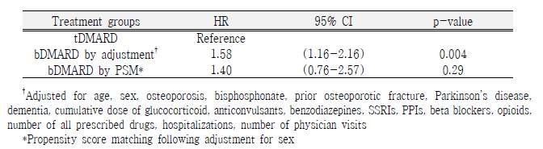
결론
본 사례에서는 RA 환자에서 tDMARD와 bDMARD의 투여에 따른 고관절 골절의 위 험을 비교한 결과, tDMARD 군에 비해 bDMARD 군에서 위험이 높은 경향은 있으나 그 정도가 통계적으로 유의하지 않아서 결론을 내릴 수 없었다. 참고한 Kim et al.(2012)에서는 더 큰 환자집단을 대상으로 분석을 수행하였으나 통계적으로 유의한 결과를 관찰하지 못하였기 때문에 비슷한 경향의 결과로 보일 수도 있다. 하지만, 개 요에서 설명한 한계로 인하여 엄밀한 임상적 해석과 참고논문의 결과와의 직접비교 보다는, 본 사례를 참고하여 실제의 분석을 구체적으로 계획하고 수행하는데 참고가 될 수 있기를 희망한다.
7.5 프로그램 예시
류마티스관절염 환자 선정
먼저 상병코드를 이용하여 류마티스관절염 환자를 정의하기 위하여 T40 테이블에 서 M05, M06 상병코드를 가지는 행을 선택하고, 명세서 기준의 상병변수를 생성하기
위하여 SQL문을 사용한 후, 이를 명세서조인키 기준으로 T20 테이블에 조인한다. 그 리고 최종적으로 류마티스관절염 상병을 가지는 명세서만을 선택한다.
/* T40 테이블에서 류마티스관절염 상병코드를 가지는 행 선택 */ data t40_RA;
set hira.t40;
if substr(SICK_CD,1,3) in ('M05', 'M06') then RA=1;/* 류마티스 관절염 */ run;
/* 각각의 명세서에 대한 류마티스관절염 상병변수 생성 */ proc sql;
create table t40_RA1 as select spec_id_sno, sick_cd,
max(RA) as ra from t40_ra
group by spec_id_sno; quit;
/* T20 테이블에 T40에서 생성한 류마티스관절염 상병변수 조인 */ proc sql;
create table t2040_ra as select a.*, b.*
from hira.t20 as a left join t40_RA1 as b
on (a.spec_id_sno=b.spec_id_sno); quit;
/*류마티스 관절염(RA)환자들에 대한 명세서만 선택*/ data t2040_ra1;
set set t2040_ra where ra=1;
run;위의 프로그램 결과 생성되는 테이블은 다음과 같다.
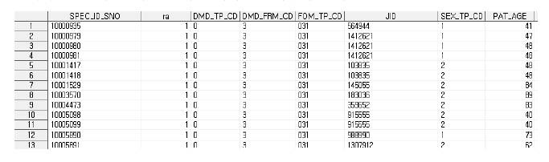
※ 프로그램 Tip
① if substr(SICK_CD,1,3) in ('M05', 'M06') then RA=1
⇒ T40의 상병코드가 입력되어있는 ‘SICK_CD’변수에서 substr함수를 통해 해당 질병에 해당 하는 코드가 있을 경우 해당 질병 변수에 1이라는 값을 넣어 변수를 생성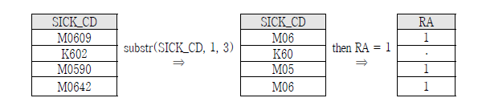
② select spec_id_sno, max(RA) as ra
group by spec_id_sno
⇒ 동일한 명세서 조인키를 가지는 경우 RA 변수가 가지는 값들 중 최대값을 RA 변수에 입력 하도록 하며, GROUP BY문을 이용해 동일한 여러 행(명세서)들을 모아 한줄로 요약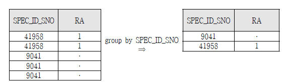
7.5.0.1 치료법 정의{-}`
DMARD 처방은 T300 진료내역, T530 원외처방전 상세내역에서 DMARD 코드의 유 무로 정의하였다. 이때 DMARD의 주성분명에 해당하는 주성분코드를 추출하기 위하 여 약품코드, 주성분코드, 주성분명이 들어 있는 약가파일을 이용하여, SQL문의 like 함수를 사용하여 사전에 정의된 주성분명에 해당하는 행을 선택한다.
/*치료법의 정의를 위하여 고려한 DMARD 목록에서 일부만 선택*/ proc sql;
create table code.drug_master_RA as select *
from drug_master where
generic_nm like 'adalimumab%' or generic_nm like 'etanercept%' or generic_nm like 'infliximab%' or generic_nm like 'golimumab%' ;
quit;위에서 추출된 drug_master_ra에 포함되어 있는 주성분명 코드를 이용하여 T30 테 이블과 T53 테이블에서 DMARD 약물을 사용한 명세서를 SQL문의 subquery 기능을 이용하여 다음과 같이 추출할 수 있다. 여기서는 총사용량을 이용하여 약물사용량을 정의하였다.
/*치료법 정의 */
/*T30테이블의 약품성분명 코드 중 일부 DMARD약물을 충족하는 명세서 추출*/ proc sql;
create table replace_30 as select SPEC_ID_SNO,
sum(TOT_USE_QTY_OR_EXEC_FQ) as ra_drug_t30 /* 동일 명세서 내 총사용량 합계 변수 생성*/ from Hira.t30
where GNL_NM_CD in (select generic_code from code.drug_master_ra )
/*DMARD약물을 충족하는 명세서 추출*/
group by spec_id_sno; quit;
/*T53테이블의 약품성분명 코드 중 일부 DMARD약물을 충족하는 명세서 추출*/ proc sql;
create table replace_53 as select SPEC_ID_SNO,
sum(TOT_USE_QTY_OR_EXEC_FQ) as ra_drug_t53 /* 동일 명세서 내 총사용량 합계 변수 생성*/ from Hira.t53
where GNL_NM_CD in (select generic_code from code.drug_master_ra )
/* DMARD약물을 충족하는 명세서 추출*/
group by spec_id_sno; quit;
/*위의 T30 T53테이블에서 추출한 명세서를 통합하여 DMARD약물을 투약한 명세서 추출*/ data drug_ra;
merge replace_30 replace_53; by spec_id_sno;
/*T30 T53 테이블의 약물 투약량을 sum하여 DMARD약물 투약량 변수 생성*/ drug_ra_use = sum(ra_drug_t30, ra_drug_t53);
if drug_ra_use > 0 then DMARD=1;
/*DMARD약물 투약 실적이 있는 명세서 추출하여 RA치료법에 대한 테이블생성*/ keep SPEC_ID_SNO DMARD;
run;
/*류마티스 (RA)환자에 대한 테이블에 DMARD변수 조인*/ proc sql;
create table t2040_ra_dmard as select a.* , b.*
from t2040_ra1 as a left join drug_ra as b
/*t2040_ra1: 류마티스(RA)환자 테이블, drug_ra: DMARD 변수 테이블*/ on (a.spec_id_sno=b.spec_id_sno)
group by jid; quit;위의 프로그램 결과 생성되는 테이블은 다음과 같다
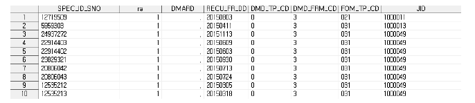
※ 프로그램 Tip
① where
generic_nm like 'adalimumab%' or generic_nm like 'etanercept%' or generic_nm like 'infliximab%' or generic_nm like 'golimumab%'
⇒ like 'A %' 는 특정 자료에 대한 검색을 할 때 활용하는 함수이다. WHERE 이후에 대문자 A 로 시작하는 크기에 상관 없이 모든 문자를 검색하도록 한다.
② where GNL_NM_CD in (select generic_code from code.drug_master_ra )
- 서브쿼리(subquery) : WHERE, FROM, HAVING절에 다른 SQL문장을 포함하는 형태이다. 서브쿼 리를 사용하면 불필요한 테이블을 생성하지 않고도 바로 원하는 테이블을 생성 할 수 있기 때문에 코드를 간소화 할 수 있다. 서브쿼리 사용 시, 문장을 괄호로 둘러싸야 하며, ORDER BY 절은 포함 할 수 없다.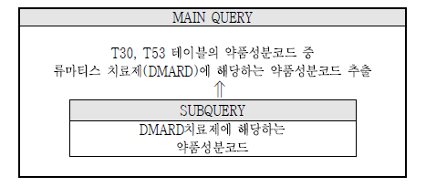
③ drug_ra_use = sum( ra_drug_t30, ra_drug_t53) if drug_ra_use > 0 then DMARD=1
⇒ 류마티스 치료제(DMARD)약물을 처방받은 환자를 구별하기 위하여 T30 T53 테이블의 DMARD 약물의 총사용량을 모두 합하여 DMARD약물 변수를 생성함. 만약 약물 총사용량 변수값이 0보다 크면 이를 DMARD를 처방받은 환자로 볼 수 있다류마티스관절염 환자 중 DMARD 사용 환자 선정
위에서 생성한 RA t2040_ra_dmard 테이블에서 4월부터 6월까지 dmard를 사용한 명세서만 선택하고, 해당 기간 중 처음으로 dmard 처방을 받은 요양개시일자를 기준 일자로 정의한다.
/* 2015년 RA 환자 중 4-6월 기간 중 처음으로 DMARD 처방이 확인 된 환자 */
data index;
set T2040_ra_dmard; if dmard=1;
recu_fr_dt = input(recu_fr_dd, yymmdd10.); /*숫자형태의 변수를 날짜형태로 바꿔주는 과정*/ if 4 <= month(recu_fr_dt) <= 6;
format recu_fr_dt yymmdd10. ; run;
proc sort data=index;
by jid recu_fr_dt; /*환자 별로 요양개시일자 순서대로 정렬 */ run;
/* cohort 정의, index date 정의 */ data cohort; /* => eligible cohort */
set index; by jid;
if first.jid; /* 개인식별대체키를 기준으로 처음으로 dmard를 처방받은 명세서만 선택하고 요양개시일자를 index date로 정의*/
rename recu_fr_dt=index_date;
keep jid sex_tp_cd pat_age recu_fr_dt ra dmard; run;위의 프로그램 결과 생성되는 테이블은 다음과 같다
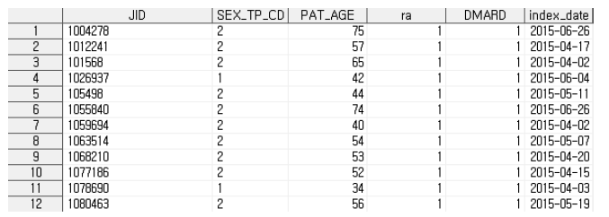
① recu_fr_dt = input(recu_fr_dd, yymmdd10.) format recu_fr_dt yymmdd10.
⇒ STEP1. input 함수로 값을 읽어 들여 날짜포맷으로 정의 STEP2. format을 이용해 출력할 포맷을 지정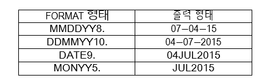
SAS 날짜 함수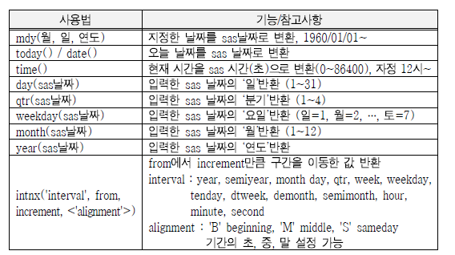
③ if 4 <= month(recu_fr_dt) <= 6
⇒ 4월부터 6월까지 명세서만 선택결과 발생 정의
T40 테이블에서 고관절 골절 상병코드를 이용하여 고관절 골절 발생을 정의한다. 이때 고관절 골절 발생은 기준일자 이후 발생하는 경우만으로 정의해야 하므로, 우 선 정의된 기준일자를 T2040_ra_dmard 테이블에 조인하고, 기준일자 이후에 발생하 는 고관절 골절만 선택한다.
/*결과발생정의 - 고관절 골절 발생 */
/*T2040_ra_dmard테이블에 기준일자를 left join*/
proc sql;
create table t40_1 as select a.*, b.index_date from t2040_ra_dmard as a left join cohort as b
on (a.jid=b.jid); /*개인식별대체키를 기준으로 통합*/ quit;
data t40_2; set t40_1;
/*기준일자 + 6개월을 followup date로 정의*/
followup_date=intnx('month', index_date, 6, 'sameday');
if index_date <= input(recu_fr_dd, yymmdd10.) <= followup_date;
/*T40테이블에서 상병코드 중 고관절 골절 발생 변수 생성*/
if substr(SICK_CD,1,4) in ('S720','S721','S722') then fracture=1; format followup_date yymmdd10.;
run;
proc sql;
create table t40_3 as
select jid, max(fracture) as fracture /*고관절 골절 발생*/ from t40_2
group by jid; quit;
proc sql;
create table cohort1 as select a.*, b.*
from cohort as a left join t40_3 as b
on (a.jid=b.jid);/*개인식별대체키를 기준으로 통합*/ quit;
위의 프로그램 결과 생성되는 t40_2, cohort1테이블은 다음과 같다.
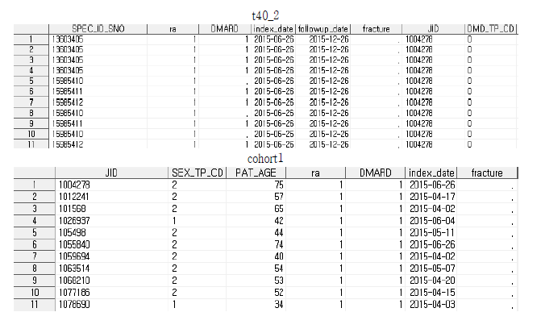